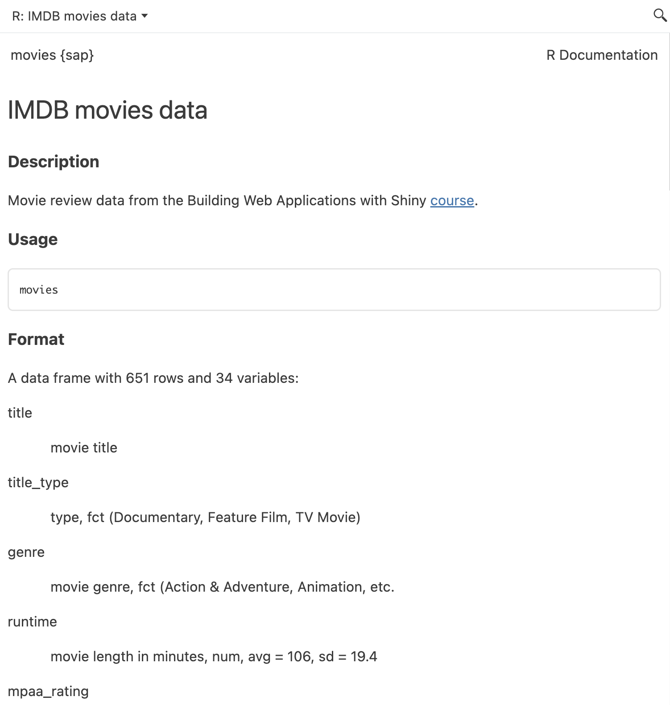

# install.packages('pak')
pak::pak('mjfrigaard/shinypak')7 Data
We’ve documented the functions in moviesApp and successfully managed the dependencies with the NAMESPACE and DESCRIPTION files. In this chapter, we’re going to cover how make sure the movie.RData file becomes part of moviesApp, and other locations for data files in app-packages. For information on how to store and retrieve inside your application, see the chapter on app Data.
7.1 App-package data
Data in R packages are typically stored in one of three folders: data/, data-raw/, and inst/extdata/. The folder you use will depend on the format, accessibility, and intended purpose of the data file.1
7.2 data/
The primary location for data is the data/ folder. Objects in data/ folder are available in your package namespace when it’s installed and loaded, and can be accessed with the :: syntax. See the example below of the storms data from dplyr:
library(dplyr)
head(dplyr::storms)
## # A tibble: 6 × 13
## name year month day hour lat long status
## <chr> <dbl> <dbl> <int> <dbl> <dbl> <dbl> <fct>
## 1 Amy 1975 6 27 0 27.5 -79 tropi…
## 2 Amy 1975 6 27 6 28.5 -79 tropi…
## 3 Amy 1975 6 27 12 29.5 -79 tropi…
## 4 Amy 1975 6 27 18 30.5 -79 tropi…
## 5 Amy 1975 6 28 0 31.5 -78.8 tropi…
## 6 Amy 1975 6 28 6 32.4 -78.7 tropi…
## # ℹ 5 more variables: category <dbl>, wind <int>,
## # pressure <int>,
## # tropicalstorm_force_diameter <int>,
## # hurricane_force_diameter <int>7.2.1 LazyData
Data files become part of a package when they’re added to the data/ folder and LazyData: true is added to the DESCRIPTION file.
LazyData: true: this means the data are only loaded into memory if they are explicitly accessed by the user or a function in the package. Until then, only the dataset names is loaded. This user-friendly practice is the default for most R packages.LazyData: false(or omitted): accessing a data file from the package requires explicitly loading it using thedata()function.
Files in data/ should be in the .rda or .RData format. Below are the steps for adding movies to moviesApp:
- Move the
movies.RDatafile into a newly created thedata/folder:
moviesApp/
└──data/
└── movies.RData- Include
LazyData: truein theDESCRIPTIONfile (I’ve added it aboveImports:):
Package: moviesApp
Version: 0.0.0.9000
Type: Package
Title: movies app
Description: A movies data shiny application.
Author: John Smith [aut, cre]
Maintainer: John Smith <John.Smith@email.io>
License: GPL-3
RoxygenNote: 7.2.3
Encoding: UTF-8
Roxygen: list(markdown = TRUE)
LazyData: true
Imports:
shiny,
ggplot2,
rlang,
stringr,
tools- Load, document, and install.
Ctrl/Cmd + Shift + L
ℹ Loading moviesAppCtrl/Cmd + Shift + D
==> devtools::document(roclets = c('rd', 'collate', 'namespace'))
ℹ Updating moviesApp documentation
ℹ Loading moviesApp
Documentation completedCtrl/Cmd + Shift + B
In the Build pane, you’ll notice a few new ** data lines of output after adding data:
** data
*** moving datasets to lazyload DB
** byte-compile and prepare package for lazy loadingWe can check to see if movies has been included in moviesApp using the package::data syntax:

movies is now part of moviesApp
7.2.2 usethis::use_data()
If you’d prefer to store data using the .rda format, the usethis package has the use_data() function that will automatically store an object in data/ in the .rda format.
To use usethis::use_data(), we can load the movies data into the global environment with load("movies.RData"), then run usethis::use_data(movies):
usethis::use_data(movies)✔ Setting active project to '/path/to/moviesApp'
✔ Adding 'R' to Depends field in DESCRIPTION
✔ Creating 'data/'
✔ Saving 'movies' to 'data/movies.rda'
• Document your data (see 'https://r-pkgs.org/data.html')The Depends: field is added to the DESCRIPTION file with an R version (this ensures the data files will be loaded)
Depends:
R (>= 2.10)use_data() will also add LazyData: true to the DESCRIPTION
7.3 Documenting data
Documenting data can be tedious, but it’s worth the effort if you’ll be sharing your package with collaborators. There are multiple ways to store dataset documentation. A common approach is to create a data.R file in the R/ folder.2
fs::file_create("R/data.R")In data.R, we provide a @title, @description, and @details for the data (with or without the tags), followed by @format:
#' @title IMDB movies data
#'
#' @description
#' Movie review data. Note: these data come from the [Building Web Applications with Shiny course](https://rstudio-education.github.io/shiny-course/).
#'
#' @details
#' Read more about acquiring these data in the ['Web Scraping and programming' section of Data science in a box](https://datasciencebox.org/02-exploring-data#web-scraping-and-programming)
#'
#' @format7.3.1 @format
The text following @format is a one-sentence description of the data (with it’s dimensions).
#' @title IMDB movies data
#'
#' @description
#' Movie review data. Note: these data come from the [Building Web Applications with Shiny course](https://rstudio-education.github.io/shiny-course/).
#'
#' @details
#' Read more about acquiring these data in the ['Web Scraping and programming' section of Data science in a box](https://datasciencebox.org/02-exploring-data#web-scraping-and-programming)
#'
#' @format A data frame with [] rows and [] variables:7.3.2 \describe & \item
Each variable (column) in the data is documented with a combination of \describe and \item (pay close attention to the curly brackets):
#' \describe{
#' \item{variable}{description}
#' }After closing the curly brackets in \describe, place the name of the data in quotes ("movies") on the following line.
Below is the documentation for the first five columns in the movies dataset:
#' @title IMDB movies data
#'
#' @description
#' Movie review data. Note: these data come from the [Building Web Applications with shiny course](https://rstudio-education.github.io/shiny-course/).
#'
#' @details
#' Read more about acquiring these data in the ['Web Scraping and programming' section of Data science in a box](https://datasciencebox.org/02-exploring-data#web-scraping-and-programming)
#'
#' @format A data frame with 651 rows and 34 variables:
#' \describe{
#' \item{title}{movie title}
#' \item{title_type}{type, fct (Documentary, Feature Film, TV Movie)}
#' \item{genre}{movie genre, fct (Action & Adventure, Animation, etc.}
#' \item{runtime}{movie length in minutes, num, avg = 106, sd = 19.4}
#' \item{mpaa_rating}{movie rating, fct (G, NC-17, PG, PG-13, R, Unrated)}
#' }
#'
"movies"If we load and document moviesApp, we can see a preview of the help file:
Ctrl/Cmd + Shift + L
ℹ Loading moviesAppCtrl/Cmd + Shift + D
==> devtools::document(roclets = c('rd', 'collate', 'namespace'))
ℹ Updating moviesApp documentation
ℹ Loading moviesApp
Writing movies.Rd
Documentation completed?movies

movies help file
movies dataset
I’ve provided documentation for the full movies dataset below.
show/hide full movies data documenation
#' @title IMDB movies data
#'
#' @description
#' Movie review data. Note: these data come from the [Building Web Applications with Shiny course](https://rstudio-education.github.io/shiny-course/).
#'
#' @details
#' Read more about acquiring these data in the ['Web Scraping and programming' section of Data science in a box](https://datasciencebox.org/02-exploring-data#web-scraping-and-programming)
#'
#' @format A data frame with 651 rows and 34 variables:
#' \describe{
#' \item{title}{movie title}
#' \item{title_type}{type, fct (Documentary, Feature Film, TV Movie)}
#' \item{genre}{movie genre, fct (Action & Adventure, Animation, etc.}
#' \item{runtime}{movie length in minutes, num, avg = 106, sd = 19.4}
#' \item{mpaa_rating}{movie rating, fct (G, NC-17, PG, PG-13, R, Unrated)}
#' \item{studio}{name of studio, chr}
#' \item{thtr_rel_date}{Theatre release date, POSIXct, min = 1970-05-19 21:00:00, max = 2014-12-24 21:00:00}
#' \item{thtr_rel_year}{Theatre release year, num, min = 1970, max = 2014}
#' \item{thtr_rel_month}{Theatre release month, num, min = 1, max =12}
#' \item{thtr_rel_day}{Theatre release day, num, min = 1, max =31}
#' \item{dvd_rel_date}{DVD release date, POSIXct, min = 1991-03-27 21:00:00, max = 2015-03-02 21:00:00}
#' \item{dvd_rel_year}{DVD release year, num, min = 1991, max = 2015}
#' \item{dvd_rel_month}{DVD release month, num, min = 1, max = 12}
#' \item{dvd_rel_day}{DVD release day, num, min = 1, max = 31}
#' \item{imdb_rating}{Internet movie database rating, avg = 6.49, sd = 1.08}
#' \item{imdb_num_votes}{Internet movie database votes, avg = 57533, sd = 112124}
#' \item{critics_rating}{Rotten tomatoes rating, fct (Certified Fresh, Fresh, Rotten)}
#' \item{critics_score}{Rotten tomatoes score, avg = 57.7, sd = 28.4}
#' \item{audience_rating}{Audience rating, fct (Spilled, Upright)}
#' \item{audience_score}{Audience score, avg = 62.4, sd = 20.2}
#' \item{best_pic_nom}{Best picture nomination, fct (no, yes)}
#' \item{best_pic_win}{Best picture win, fct (no, yes)}
#' \item{best_actor_win}{Best actor win, fct (no, yes)}
#' \item{best_actress_win}{Best actress win, fct (no, yes)}
#' \item{best_dir_win}{Best director win, fct (no, yes)}
#' \item{top200_box}{Top 20 box-office, fct (no, yes)}
#' \item{director}{Name of director, chr}
#' \item{actor1}{Name of leading actor, chr}
#' \item{actor2}{Name of supporting actor, chr}
#' \item{actor3}{Name of #3 actor, chr}
#' \item{actor4}{Name of #4 actor, chr}
#' \item{actor5}{Name of #5 actor, chr}
#' \item{imdb_url}{IMDB URL}
#' \item{rt_url}{Rotten tomatoes URL}
#' }
#'
"movies"7.3.3 Using movies
After documenting the movies data in data.R, we’ll remove the call to load() in the mod_scatter_display_server() function and replace it with a direct call to the dataset:
mod_scatter_display_server <- function(id, var_inputs) {
shiny::moduleServer(id, function(input, output, session) {
inputs <- reactive({
plot_title <- tools::toTitleCase(var_inputs()$plot_title)
list(
x = var_inputs()$x,
y = var_inputs()$y,
z = var_inputs()$z,
alpha = var_inputs()$alpha,
size = var_inputs()$size,
plot_title = plot_title
)
})
output$scatterplot <- renderPlot({
plot <- scatter_plot(
df = movies,
x_var = inputs()$x,
y_var = inputs()$y,
col_var = inputs()$z,
alpha_var = inputs()$alpha,
size_var = inputs()$size
)
plot +
ggplot2::labs(
title = inputs()$plot_title,
x = stringr::str_replace_all(tools::toTitleCase(inputs()$x), "_", " "),
y = stringr::str_replace_all(tools::toTitleCase(inputs()$y), "_", " ")
) +
ggplot2::theme_minimal() +
ggplot2::theme(legend.position = "bottom")
})
})
}- 1
-
The
moviesdata from our package namespace
After loading, documenting, and installing the package, we see the following application:

movies_app() with movies data file
7.3.4 More examples
To illustrate other options for data documentation, we’ll use the dplyr package. dplyr stores its data in the data/ folder:
data/
├── band_instruments.rda
├── band_instruments2.rda
├── band_members.rda
├── starwars.rda
└── storms.rdaThe documentation for the datasets in dplyr are stored in R/ using a data- prefix:
R/
├── data-bands.R
├── data-starwars.R
└── data-storms.RThe three band_ datasets have documented in a single file, data-bands.R:
show/hide documentation for dplyr::band_ datasets
# from the dplyr github repo:
# https://github.com/tidyverse/dplyr/blob/main/R/data-bands.R
#
#' Band membership
#'
#' These data sets describe band members of the Beatles and Rolling Stones. They
#' are toy data sets that can be displayed in their entirety on a slide (e.g. to
#' demonstrate a join).
#'
#' `band_instruments` and `band_instruments2` contain the same data but use
#' different column names for the first column of the data set.
#' `band_instruments` uses `name`, which matches the name of the key column of
#' `band_members`; `band_instruments2` uses `artist`, which does not.
#'
#' @format Each is a tibble with two variables and three observations
#' @examples
#' band_members
#' band_instruments
#' band_instruments2
"band_members"
#' @rdname band_members
#' @format NULL
"band_instruments"
#' @rdname band_members
#' @format NULL
"band_instruments2"In the example above, note that two of the datasets (band_instruments and band_instruments2) have the @format set to NULL, and define the help search name with @rdname. The @examples tag can be used to view the dataset when users click ‘Run Examples’
Either method works–what’s important is that each dataset in your package has documentation.
7.4 data-raw/
The data-raw folder is not an official directory in the standard R package structure, but it’s a common location for any data processing or cleaning scripts, and the raw data file for datasets stored in data/.3
7.4.1 More examples
If we look at the data in the dplyr package again, we can see the data-raw/ folder contains a combination of .R and .csv files:
data-raw/
├── band_members.R
├── starwars.R
├── starwars.csv
└── storms.R
1 directory, 4 filesIn this example, the starwars.R script downloads & prepares starwars, then saves a .csv copy of the data in data-raw.
7.5 inst/extdata/
The extdata folder (inside inst/) can be used for external datasets in other file formats (.csv, .tsv, .txt, .xlsx, etc).4 The data files in inst/extdata/ aren’t directly loadable using the package::data syntax or the data() function like with the data/ directory. These files can be imported using the file path accessor function, system.file().
For example, if we create the inst/extdata/ and save a copy of movies as a .fst file:
library(fs)
library(tibble)
library(fst)fst package v0.9.8fs::dir_create("inst/extdata/")
fst::write_fst(
x = movies,
path = "inst/extdata/movies.fst",
compress = 75)fstcore package v0.9.14
(OpenMP was not detected, using single threaded mode)Then load, document, and install moviesApp:
Ctrl/Cmd + Shift + L / D / B
We can import movies.fst using system.file() to create a path to the file:
tibble::as_tibble(
fst::read_fst(path =
system.file("extdata/", "movies.fst", package = "moviesApp")
)
)show/hide
## A tibble: 651 × 34
# title title_type genre runtime mpaa_rating studio thtr_rel_date
# <chr> <fct> <fct> <dbl> <fct> <fct> <dttm>
# 1 Filly… Feature F… Drama 80 R Indom… 2013-04-18 21:00:00
# 2 The D… Feature F… Drama 101 PG-13 Warne… 2001-03-13 21:00:00
# 3 Waiti… Feature F… Come… 84 R Sony … 1996-08-20 21:00:00
# 4 The A… Feature F… Drama 139 PG Colum… 1993-09-30 21:00:00
# 5 Malev… Feature F… Horr… 90 R Ancho… 2004-09-09 21:00:00
# 6 Old P… Documenta… Docu… 78 Unrated Shcal… 2009-01-14 21:00:00
# 7 Lady … Feature F… Drama 142 PG-13 Param… 1985-12-31 21:00:00
# 8 Mad D… Feature F… Drama 93 R MGM/U… 1996-11-07 21:00:00
# 9 Beaut… Documenta… Docu… 88 Unrated Indep… 2012-09-06 21:00:00
# 10 The S… Feature F… Drama 119 Unrated IFC F… 2012-03-01 21:00:00
## ℹ 641 more rows
## ℹ 27 more variables: thtr_rel_year <dbl>, thtr_rel_month <dbl>,
## thtr_rel_day <dbl>, dvd_rel_date <dttm>, dvd_rel_year <dbl>,
## dvd_rel_month <dbl>, dvd_rel_day <dbl>, imdb_rating <dbl>,
## imdb_num_votes <int>, critics_rating <fct>, critics_score <dbl>,
## audience_rating <fct>, audience_score <dbl>, best_pic_nom <fct>,
## best_pic_win <fct>, best_actor_win <fct>, best_actress_win <fct>, …
## ℹ Use `print(n = ...)` to see more rowsWe’ll cover inst/ and system.file() in more detail in the next chapter.

Recap
It’s common for Shiny apps to require data, so knowing how to store and access these files in your app-package will make it easier to load and reproducible in other environments. Here are a few other things to consider when including data in your app-package:
Read more about the data folder in the ‘Data in packages’ section of Writing R Extenstions and the ‘Data’ chapter of R Packages, 2ed.↩︎
The
ggplot2package has a great example of documenting datasets in the R/data.R file↩︎Read more about the
data-rawfolder in R Packages, 2ed↩︎Read more about the
inst/extdata/folder in R Packages, 2ed↩︎